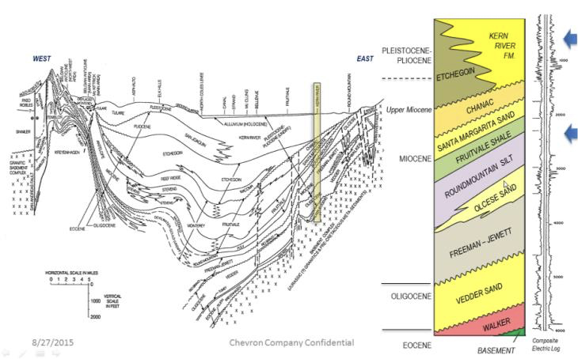
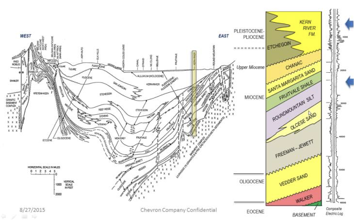
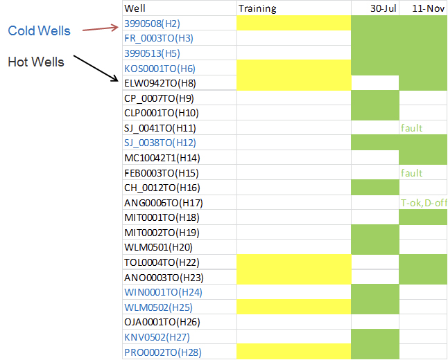
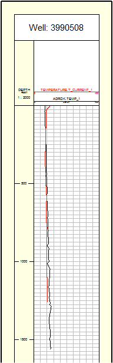
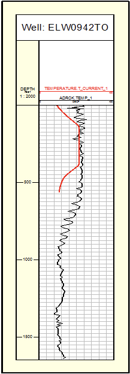
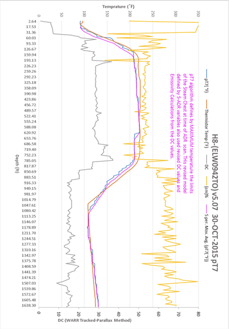

Monitoring: Efficacy test of the application of ADR technology to commercial measurement of hot and cold subsurface regions and of temperature for Enhanced Oil Recovery applications onshore USA
Project aims
The survey was designed to achieve a proof of concept and test application of Adrok’s patented proprietary technology for mapping temperature changes in the ground. The site investigated was in Bakersfield, California for a multi-national oil company. The aims were to answer the following questions:
- Can the tool clearly distinguish temperature interfaces?
- Can the tool clearly distinguish the main lithologies?
- Are the results within reasonable error?
- Are the results reasonably repeatable?
- Is the tool operationally sound?
- Can the full process be operationally integrated into CVX’s Temperature Surveillance and EOR value chain?
The field survey was conducted in September 2014 by Adrok in California (Figure 1) and a total of twenty-five virtual borehole sites were scanned by Adrok.
Exploration/Project challenges
There is currently no surface remote sensing technique available on the market to accurately measure subsurface temperature without drilling boreholes and using downhole thermometer tools. The challenge is to decipher if ADR is a reliable technique for measuring subsurface temperature gradients.
Geological context
Bakersfield is located in north-eastern California and comprises sedimentary rock sequences of sand, shale and silts from the Eocene up to the Pliocene geological eons (see Figure 2 below).
 Figure 1: Map of Bakersfield, California, USA (above) and expanded map of the client’s Oil Field (below).

Figure 2: Stratigraphic framework of the Kern River
Figure 1: Map of Bakersfield, California, USA (above) and expanded map of the client’s Oil Field (below).

Figure 2: Stratigraphic framework of the Kern River
Kern River- Quick Facts
- Field Discovered: 1899
- Cum. Production: 2.2 Billion
- OEG Production: 68,000 bbl/Day Water Production: 900,000 bbl/Day Steam Injection: 210,000 bbl/Day Active Wells:
- Producers 10,000 +
- Injectors 800
- TO Wells 700
Adrok’s results
Of the 25 holes tested, Adrok successfully identified 20/25 correctly as hot or cold (80% accuracy). Depth accuracy was also achieved on single and multiple steam chests.
An example of one of the training holes is shown below:
An example of hot holes are shown below:
The results led the client to conclude that Adrok’s ADR temperature measurements were significantly reliable and of a Technology Readiness Level (TRL) 6. The client is now working with Adrok to increase the TRL to 9 (commercially operational).
Benefits for client
On this oilfield, the client currently takes temperature measurements once every 90 days for each of their 75,000 well locations. The cost of conducting this invasive, downhole thermometer measurement is around $5,000 per well. During measurement the wells are not in production and there is a cost associated with this downtime. Adrok has the potential to reduce the costs associated with downhole thermometer measurements, as ADR can measure temperature from ground level without the need of an expensive borehole.